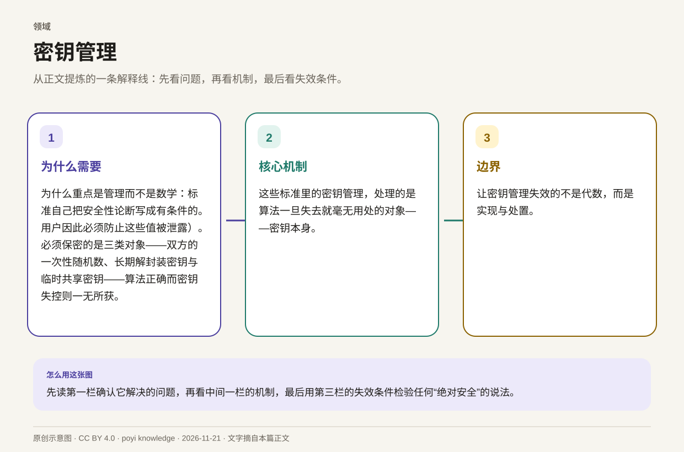

原理与机制
领域：密钥管理（Key Management）。这些标准里的密钥管理，处理的是算法一旦失去就毫无用处的对象——密钥本身。FIPS 203 在 fips203.txt:28 用一句话说明了它所标准化的机制：「A key-encapsulation mechanism (KEM) is a set of algorithms that, under certain conditions, can be used by two parties to establish a shared secret key over a public channel.」（密钥封装机制是一组算法，在某些条件下可供两方通过公开信道建立共享密钥）。公告节在 fips203.txt:43 把它放到各种建钥方法中定位：「This standard specifies a set of algorithms for establishing a shared secret key.While there are many methods for establishing a shared secret key, the particular method described in this standard is a key-encapsulation mechanism (KEM).」（本标准规定一组建立共享密钥的算法；方法虽多，本标准所描述的这一种是密钥封装机制）。fips203.txt:428 的词汇表固定了部件：「A set of three cryptographic algorithms (KeyGen, Encaps, and Decaps) that can be used by two parties to establish a shared secret key over a public channel.」（由 KeyGen、Encaps、Decaps 三个算法组成、供两方在公开信道上建立共享密钥的方案）。可见密钥生命周期始于密钥对的生成——rfc8017.txt:425-426 给出了 RSA 形式：公钥与私钥合称一个 RSA 密钥对——随后 KEM 算法从这套公钥机制中取出新建立的对称密钥。

为什么重要
为什么重点是管理而不是数学：标准自己把安全性论断写成有条件的。FIPS 203 公告第 13 条开门见山：「In applications, the security guarantees of a KEM only hold under certain conditions (see SP 800-227 [1]).」（在实际应用中，KEM 的安全保证只在某些条件下成立（见 SP 800-227）），fips203.txt:74 随即点明条件：「One such condition is the secrecy of several values, including the randomness used by the two parties, the decapsulation key, and the shared secret key itself.Users shall, therefore, guard against the disclosure of these values.」（其中一个条件是若干值的保密，包括双方使用的随机性、解封装密钥以及共享密钥本身；用户因此必须防止这些值被泄露）。必须保密的是三类对象——双方的一次性随机数、长期解封装密钥与临时共享密钥——算法正确而密钥失控则一无所获。词汇表在 fips203.txt:458 补上生命周期的另一半：「The shared secret key must be kept private and must be destroyed when no longer needed.」（共享密钥必须保密，并在不再需要时销毁）。保管与销毁都写进了规范性正文，这正是密钥管理作为独立主题存在、而非附属于某个密码算法的原因。
应用与实例
RFC 8017 展示了密钥管理相对于其所标准化方案的位置。方案一节先自陈边界（rfc8017.txt:928-930）：「their operations consist only of steps to process data with an RSA public or private key, and they do not include steps for obtaining or validating the key.」（这些方案的操作只包含用 RSA 公钥或私钥处理数据的步骤，不含获取或验证密钥的步骤——引文中的空格间距是该行跨行拼接后留存件的原样），并在 930-933 给出推论：「Thus, in addition to the scheme operations, an application will typically include key management operations by which parties may select RSA public and private keys for a scheme operation.」（因此在方案操作之外，应用通常还包含密钥管理操作，由各方为方案操作选取 RSA 公私钥）。密钥管理由此就是每个已部署方案外围那层具名的工作——获取、选择、验证。同一份文件也印出被管理的对象：「Together, an RSA public key and an RSA private key form an RSA key pair.」（RSA 公钥与 RSA 私钥合在一起构成一个 RSA 密钥对）（rfc8017.txt:425-426），在附录 A.1.2 给出私钥互换语法（rfc8017.txt:539-542），而在保护问题上把话题交给配套标准——3109-3113 写着 「It is important to protect the RSA private key against both disclosure and modification.」（保护 RSA 私钥既要防泄露也要防篡改），存储与分发方法则见 PKCS #12 与 #15。在建立一侧，FIPS 203 被要求用于联邦应用中一切需要共享密钥的场合（fips203.txt:55），建出的密钥再供对称加密与认证使用（fips203.txt:28）。
边界与攻击面
让密钥管理失效的不是代数，而是实现与处置。FIPS 204 在 fips204.txt:41 把公私分工写得很清楚：「Public keys may be known by the public, but private keys must be kept secret.」（公钥可以公开，私钥必须保密）——整套方案的安全性就锚在这个保密性上。其实现要求一节在 fips204.txt:826 点明泄露路径：「The data used internally by the key generation and signing algorithms in intermediate computation steps could be used by an adversary to gain information about the private key and thereby compromise security.」（密钥生成与签名算法在中间计算步骤使用的内部数据，可能被对手用来获取私钥信息从而破坏安全），同一行紧接着给出强制对策：「implementations of ML-DSA shall ensure that any potentially sensitive intermediate data is destroyed as soon as it is no longer needed.」（ML-DSA 的实现必须确保任何潜在敏感的内部数据在不再需要时立即销毁）。由此可见密钥是被它周围残留的东西打败的：未清理的中间值、失控的随机数、无保护的解封装密钥（即上文 FIPS 203 的条件）。在解封装一侧，ML-KEM 内置了对失败探测的防御：内部解封装用一条由私钥中随机值参与的拒绝路径处理不匹配的密文（fips203.txt:1744、fips203.txt:1779）；留存件把该机制名称印在 ASCII 双引号里，故此处只述其意、不作逐字引用。三份留存文件都没有对管理得当的密钥给出攻击复杂度，本文也不给出任何数字。
历史与背景
留存文件各自印有年代。RFC 8017 记录了 RSA 密钥与方案定义的一次管辖移交（rfc8017.txt:28-29）：「This document represents a republication of PKCS #1 v2.2 from RSA Laboratories' Public-Key Cryptography Standards (PKCS) series.」（本文件是 RSA 实验室公钥密码标准系列中 PKCS #1 v2.2 的重新发布——引文中 RSA 后的空格间距是跨行拼接的原样），第 32 行又写：「This document also obsoletes RFC 3447.」（本文件同时废止 RFC 3447）；第 9 行的页眉重复了 Obsoletes 字段，文件日期为 2016 年 11 月。密钥管理的标准化线索由此穿过 PKCS 系列（RFC 8017 定密钥类型，存储与分发交给 PKCS #12 与 #15，见 3111-3113）并在 2016 年进入 IETF 管辖。在建钥一侧，FIPS 203 两次印出自己的日期——fips203.txt:13 的 Published August 13, 2024 与 fips203.txt:36 的发布/生效并列——其说明一节在第 45 行以现在时态陈述后量子立场：该方法目前被认为即使面对拥有量子计算机的对手也是安全的，未来还可能有更多 KEM 被标准化；这句按行引用、不作逐字标记。至于密钥管理作为一个领域的更早历史，这些文件没有印出，本文也不作断言。
逐步示例与核验
范围模型
列出属于该条目的代表实体、相邻实体、时间断点与跨域关系；范围外对象不并入。
参考出处
- Wikipedia search entry for 密钥管理. https://zh.wikipedia.org/w/index.php?search=%E5%AF%86%E9%92%A5%E7%AE%A1%E7%90%86
- A Brief History of Cryptology and Cryptographic Algorithms (Dooley, Springer 2013). https://link.springer.com/book/10.1007/978-3-319-01628-3